| 日付 | 2015年8月8日（土） - 2015年8月11日（火） | ||||||
|---|---|---|---|---|---|---|---|
| 山域 | 八ヶ岳、中央アルプス、近畿の山 | ||||||
| メンバー | 家族（妻、長女・4歳、長男・2歳） | ||||||
| 山行形態 | 子連れ3泊4日ホテル泊 | ||||||
| アクセス | 車、ロープウェイ | ||||||
| ルート (Map2) |
|
2日目
駒ヶ根の朝は早い。バスの始発は5時だが、それでも行列ができるという。
我々は、5時前に周辺のホテルを周るバスに乗り、一足早くロープウェイの駅に向かう。
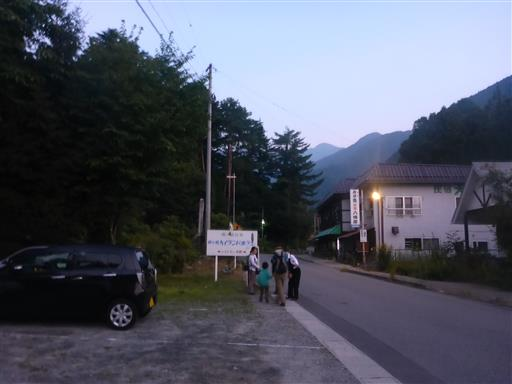
しらび平に到着。タクシー客はもう到着しているようだが、
このバスが本日最初のバスのようだ。

行列ができると言われるロープウェイ乗り場だが、人影は少ない。
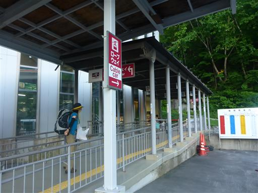
無事、待ち時間無しでロープウェイに乗る。さすがに車内は満員だ。
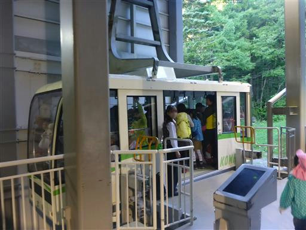
わずか7分で千畳敷駅に到着する。
早朝のため気温は低く、じっとしていると長袖を着ていても寒い。
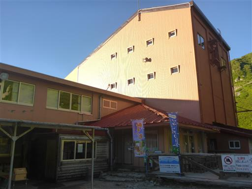
目の前に千畳敷カールが見える。素晴らしい快晴だ。
子供の時に来た時の記憶では、ものすごく広大な場所のように感じたが、
今見ると案外こじんまりしている。
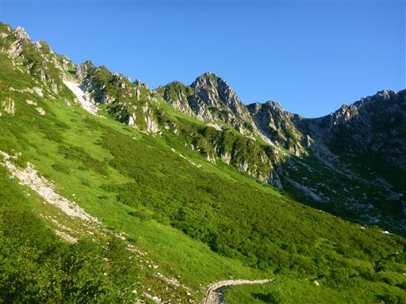
反対側には雲海と、その奥に南アルプスの山が見えている。
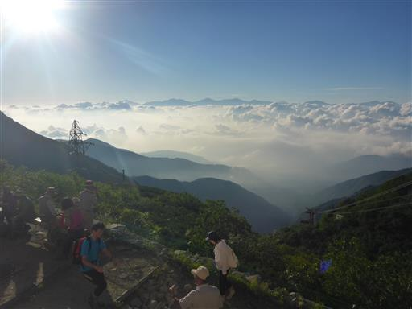
駒ヶ岳神社にお参りしてから出発する。
上空の寒気の影響で、午後から天気が崩れそうとの放送が流れている。
上空の寒気があると山では碌なことが無い。早いうちに山頂に行った方が良さそうだ。
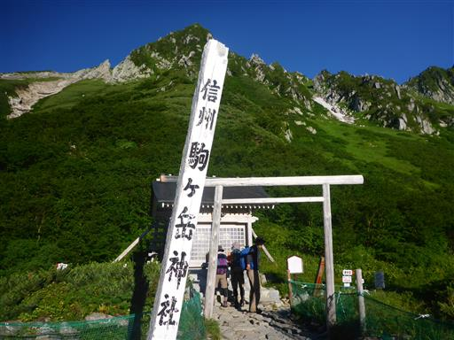
歩き始めは、カールの底に向かっての下りだ。
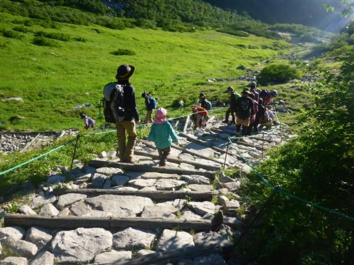
足元にウサギギクの花が咲いている。
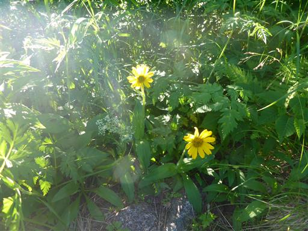
ロープウェイの駅からもよく見えた乗越浄土に向かう。
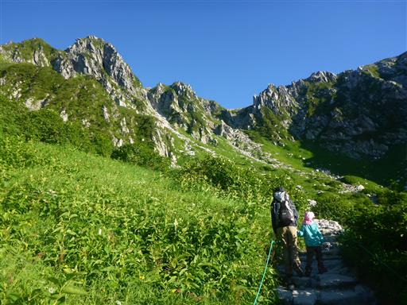
足元に虫が這っているのを娘が発見。
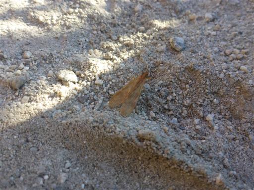
宝剣岳がよく目立っている。
辺りは岩がちな地形だが、その中で一際大きな岩峰だ。
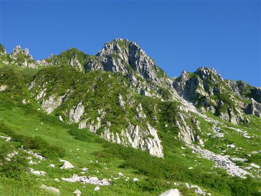
シナノキンバイが朝日を浴びて輝いている。
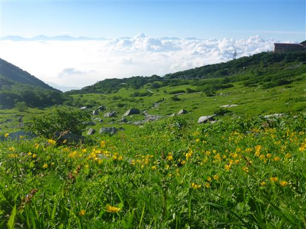
剣ヶ池からの道との合流地点に到着。
付近を周遊する観光客が間違えて入り込まないよう「軽装登山危険」との標識が出ている。
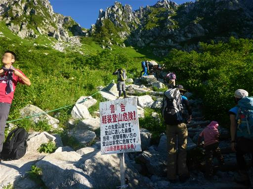
ここから急斜面が始まる。
まだ歩き始めたばかりなのに、娘はもうグズグズだ。
頭が痛いのかと聞くと、そうでは無いと言う。
はるか先に続く道がはっきり見えるため、やる気を削がれているようだ。
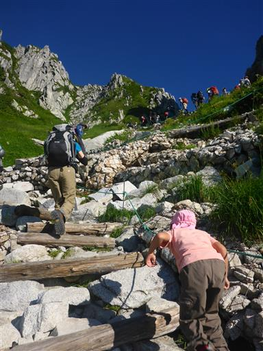
オットセイ岩。確かに少し似ている。
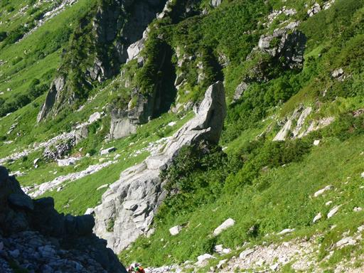
斜面は急だが、登山道はジグザグに付けられているため登りやすい。
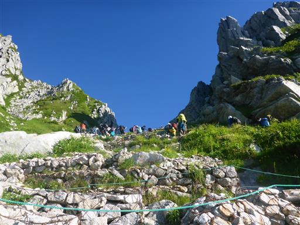
全体が湾曲していて、カール地形とよく分かる。
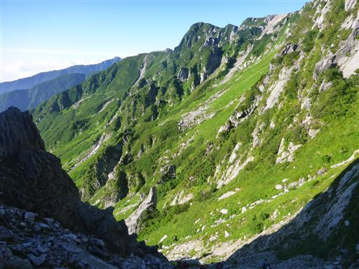
花崗岩の白い岩壁が美しい。
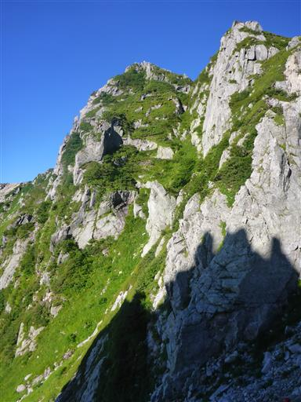
乗越浄土に到着する。これまで風がなかったのに、稜線は風が吹き抜けて寒い。
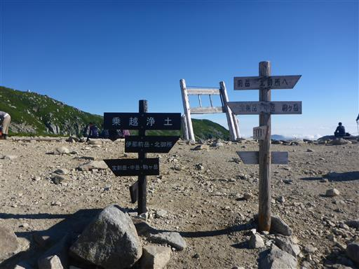
ここまで来てようやく目的地の木曽駒ヶ岳が望める。
左が中岳で右が駒ヶ岳だ。
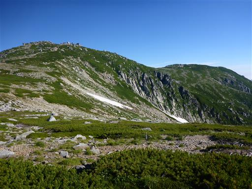
眼下に広がる千畳敷カールを見下ろす。
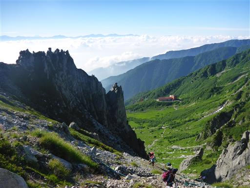
周囲にはハイマツの海が広がっている。
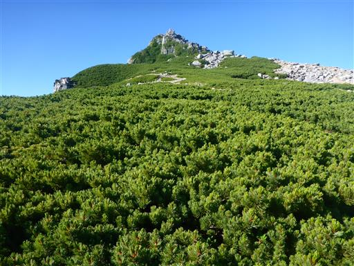
ここには山小屋が2つもある。山小屋に泊まればのんびり歩けそうだ。
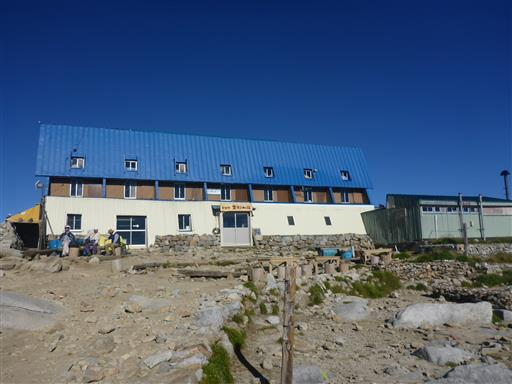
天狗岩。大して天狗には似ていないが不思議な形だ。
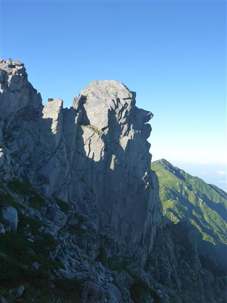
稜線から外れた場所に位置する三ノ沢岳。非常に格好良い姿だ。
ほとんどの人が木曽駒ヶ岳に向かうため、三ノ沢岳は静かな山が楽しめるらしい。
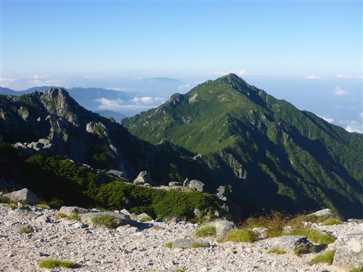
中岳に向けて歩き出す。風が強い。
娘は昔、風が大嫌いだったが、克服したのか泣き言を言わない。
一方、息子が風を嫌がっているため、雨除けのカバーを付けてあげる。
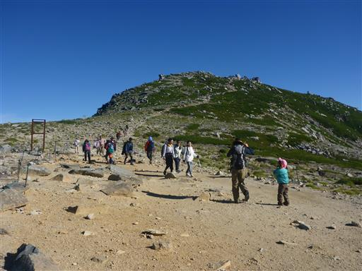
中岳の中腹から乗越浄土方面を見渡す。宝剣岳が一際目立っている。
途中で息子が歩くと言い出したため、下ろしてあげる。
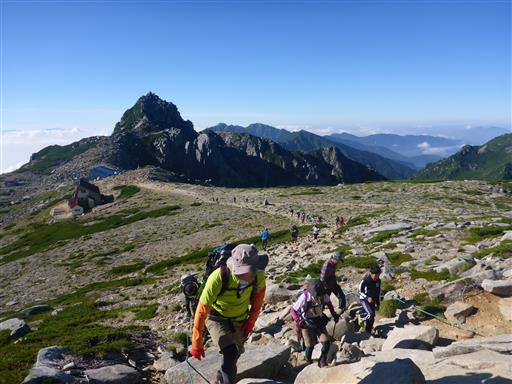
中岳に到着。ここから下って登ったら木曽駒ヶ岳だ。
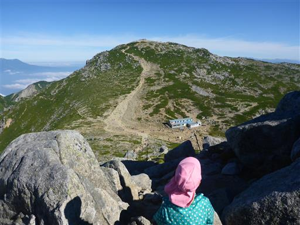
御嶽山がすぐ近くに見えている。どこから眺めても立派な山だ。
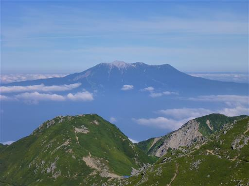
中岳と木曽駒ヶ岳の鞍部に下る。ここには山小屋が建っている。
この辺りは山小屋だらけだ。
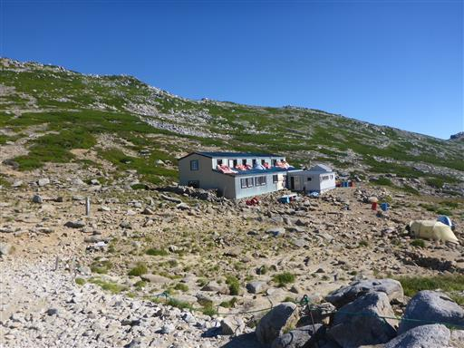
ここから駒ヶ岳まで一登りだ。
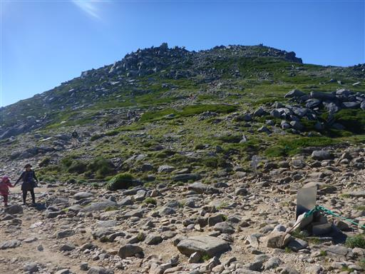
足元にコマクサが咲いている。
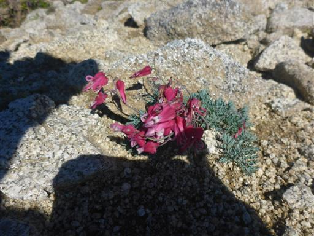
こちらはトウヤクリンドウ。
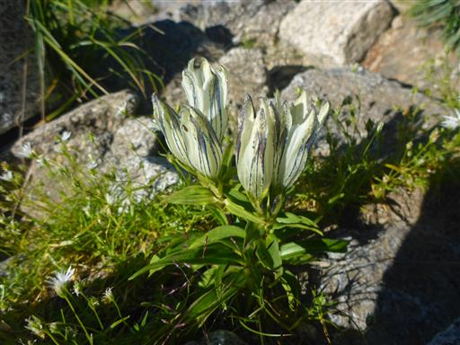
息子は下ろしたり背負ったりだが、頑張って歩いている。
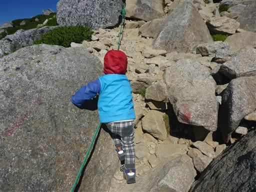
木曽駒ヶ岳山頂に到着する。標高2956m。
中央アルプスの最高峰だ。
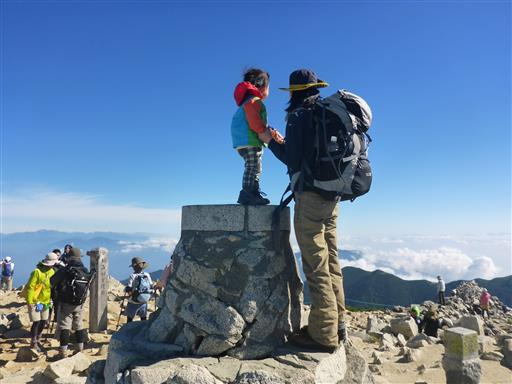
山頂には駒ヶ岳神社が建つ。
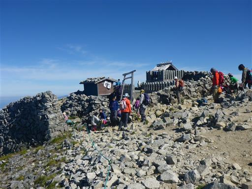
山頂は絶好の展望台で中央アルプスの山々が見渡せる。
宝剣岳の下に続く岩壁が凄まじい。遠くに見えるのは空木岳と南駒ヶ岳だ。
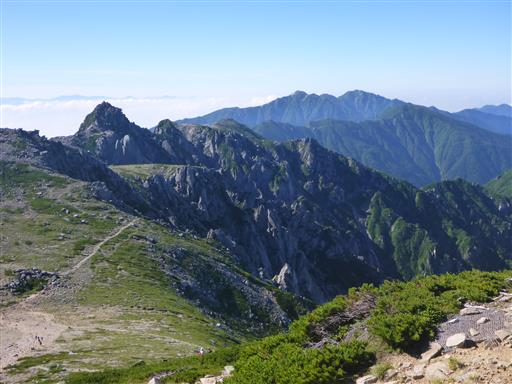
こちらは北アルプス。槍ヶ岳がはっきりと見える。

乗鞍岳。3000m峰だがあまり目立たない。
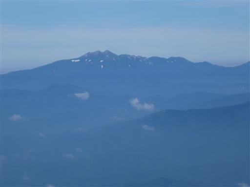
東側には南アルプスが連なっている。
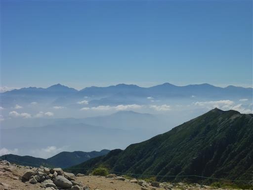
その奥に富士山の頭が見える。
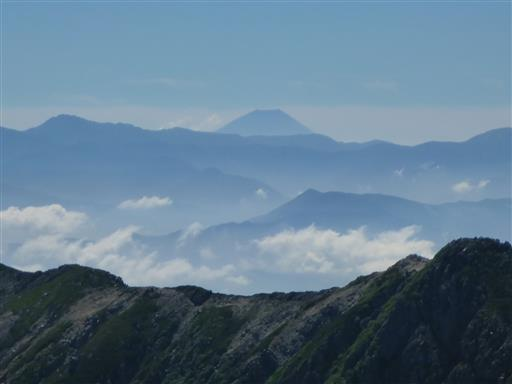
駒ヶ岳神社にお参りしたら、風を避けられる場所で昼食をとる。
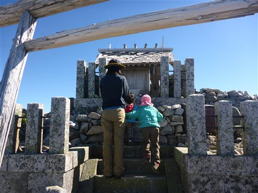
今のところ天候が崩れる気配はなさそうだ。
山頂でゆっくりしたら下山を開始する。
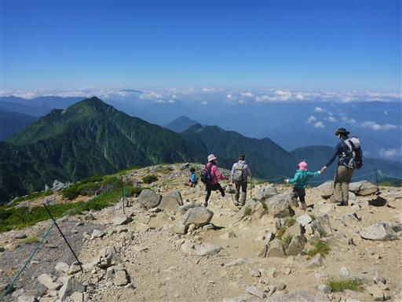
あちらこちらでイワツメクサの花が咲いている。
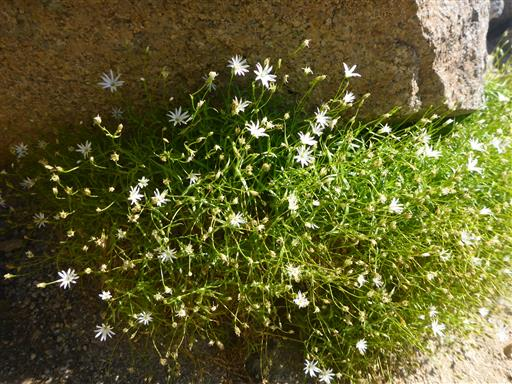
下山は中岳に登り返さず巻道の迂回コースを歩く。
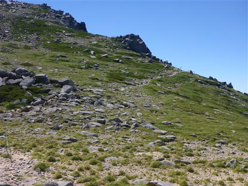
美しい岩塊だ。
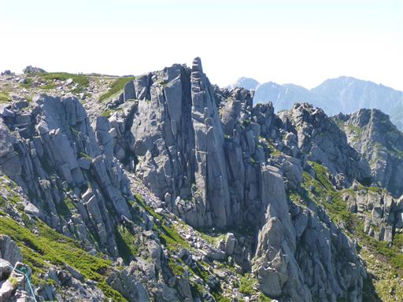
巻道は岩がちな地形のトラバース道で、そこそこ危険な道だ。
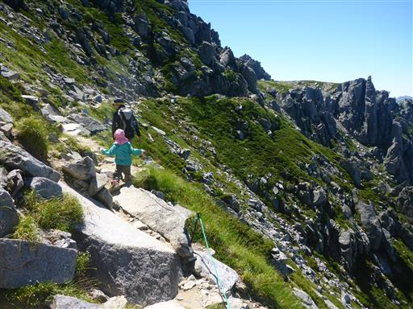
岩を乗り越えていく。
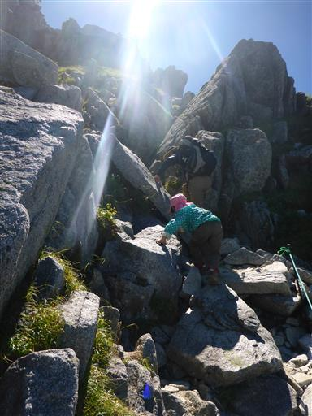
岩登り。こういう道の方が娘は楽しそうだ。
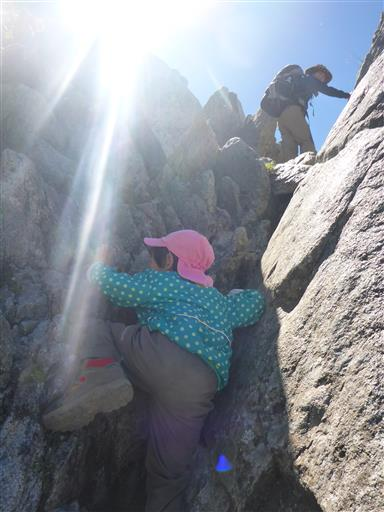
崖を見下ろす。落ちると大怪我をしそうだ。
こういう道は岩を登る場所より、トラバース道の方が危険だ。
娘は崖の側でも全く気にせず歩くため、危なっかしい。
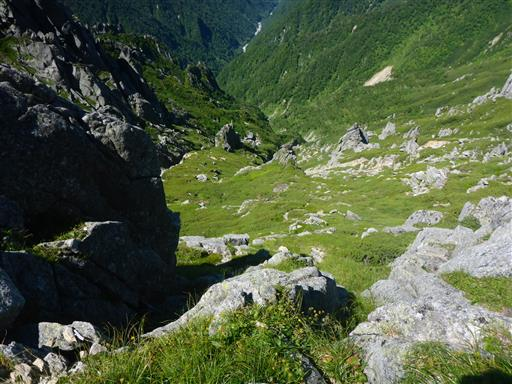
乗越浄土に戻ってくる。
娘がグズついているため、仕方なくここでおやつタイムにする。
ここからロープウェイの駅まで、急な斜面を下って行く。
息子は乗越浄土から頑張って自分の足で歩いている。
歩きにくい道なので、なかなか前に進まない。
朝に出ていた下界の雲が消えて、街の景色が見えている。
周囲は色とりどりの花が咲いている。
朝より花が多いような気がするが、太陽が出て花が開いたのだろうか？
こちらはハクサンイチゲ。代表的な高山植物だ。
下山は剣ヶ池を経由することにする。
背後には千畳敷カールがきれいに見えている。
ミヤマリンドウ。美しい紫色だ。
コバイケイソウ。
剣ヶ池に到着する。小さな小さな池だ。
池から水が流れ出ている。
多くの水が流れてしまわないよう、池の出口で少しだけ水が堰き止められている。
剣ヶ池から望む千畳敷カールが一番美しい。
天候が崩れることなく、無事ロープウェイ駅まで戻ってくる。
帰りのロープウェイは混雑している。30分ほど列に並んで乗車できた。
整理券を発行して欲しいところだ。
バスに乗り換え、終点の菅の台バスセンターで下車。
宿までは歩いて5分程度だ。
宿に戻って昼寝をしたら、近くのこまくさ橋に行ってみる。
歩行者専用の比較的大きな吊橋だ。
下を流れるのは太田切川。水遊びしている人がたくさんいる。
早速裸足になって遊ぶ。
水はきれいだ。
千畳敷を始め、標高2500m以上の高所から流れてきた水のため、かなり冷たい。

息子は手や足で水をバチャバチャして遊んでいる。
日が落ちてきた。すぐ西に中央アルプスがあるため、日没は早い。
びしょ濡れになるまで遊んだら、宿に戻る。